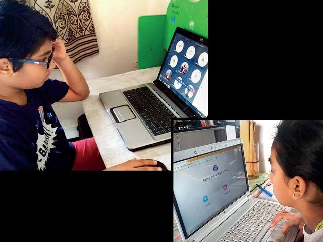

The entire planet is going through its toughest crisis for months now. And the unsung heroes who are helping us tide over this unprecedented time in history are our children. They do not deserve a time like this. And yet, enclosed in four walls, no access to gardens, friends, routine play, or school, they are showing great patience.  Not only are they doing their best to adapt to this sudden change, but are doing so with a broad smile.
It is our responsibility to preserve and protect their innocence at a time like this. We may have the best intent, to bring order, schedules and a rhythm into their lives. But let’s also practice patience, and be flexible. Let them go at their own pace. We at Citizen International School, want to help them learn with joy, the way they want it. We are bringing the school into homes through virtual and digital learning. But we are also toeing the line with love, care and patience. All we need is your support, and co-operation to pull through. The strength of a relationship is tested in trying times. We are confident that with your support, we will all cross over to a better tomorrow.